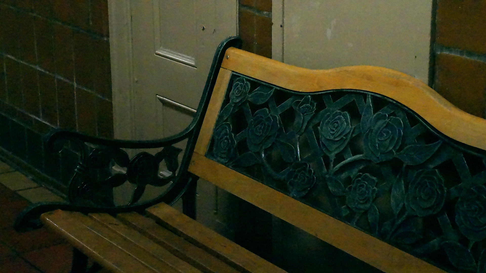

I chose this image because I loved how the backrest of the bench looked like.
The color makes the bench look old, which reminds me that Hunter had welcomed many
different people throughout many years.
I tried to use an L-shape composition technique for this image.